ホーム → 補論 → 文法 → 日本人のための日本語 → 日本人のため：7
第６章までで、客観的な事実を構成する部分（コト）ができあがりました。「家」で喩えれば、土台と柱と壁からなる建物が完成しましたが、まだ、ガラーンとした状態です。この家に家主の希望にそって色を塗り、システムキッチンやバスなどの設備を入れ、カーテンや照明器具をつけていきます。このような家主の志向や気持ちがこもっている部分がムードになります。したがって、基本的な骨組みにムードの表現が加わることで、生き生きとした文ができあがるわけです。第３章で見た主題化もムードの一つですが、それ以外にもムードの表現は非常に多くあり、基本的に述語の最後につくと言えます。
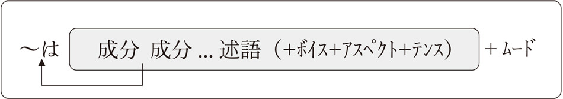では、ムードの表現にはどんなものがあるかというと、コトに対して自分の気持ちを述べるムード（これを対事的ムードと呼びます）とコトの内容を相手に働きかけるムード（これを対人的ムードと呼びます）に分かれます。わかりやすい例で説明しましょう。
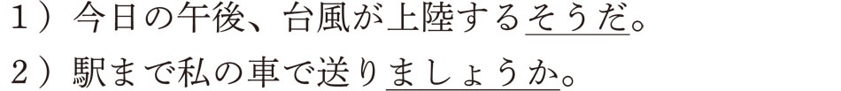１）の例では、ムードの表現は「～そうだ」ですね。「今日の午後、台風が上陸する」というコトについて、その事実を聞いたことがある（伝聞）という話し手の考えを伝えています。コトに対する判断になるわけですから、対事的ムードになります。２）では、「駅まで私の車で送り（る）」というコトを「～ましょうか」という表現（誘いかけ）で聞き手に働きかけていますね。したがって、対人的ムードになるわけです。
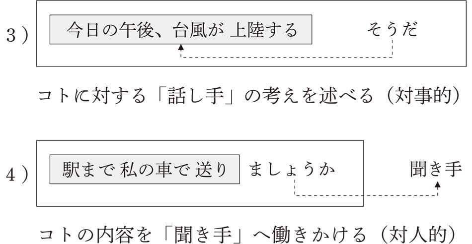ムードの表現にはさまざまなものがあり、非常にバラエティに富んでいます。以下におもなムードの表現を紹介します。まずは、対事的ムードの例から見ていきましょう。
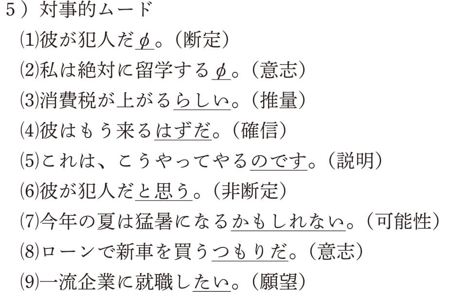の断定と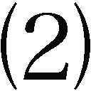の意志のムードである「～φ」はゼロを表す言語学の記号です。つまり、表面的に何も見えなくても、実際には「断定」や「意志」のムードがあるという意味です。詳しくは、この後で説明しますね。次に、対人的ムードの例を挙げます。
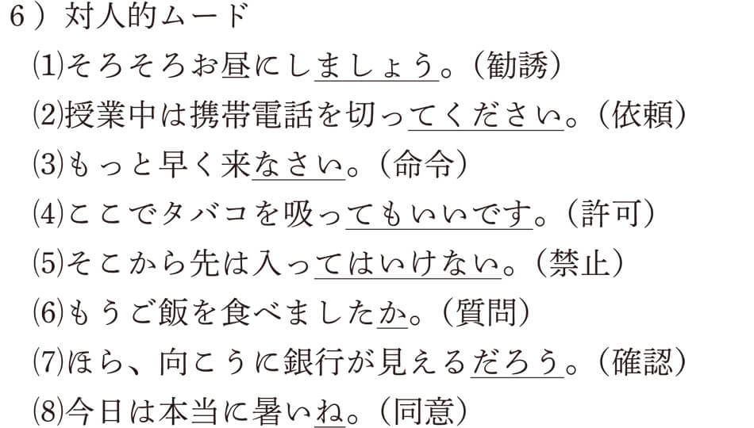これでもまだまだムードのごく一部だけなんですよ。このように、文のパーツだけで組み立てられたコトに魂を入れ、生きた文にするのがムードの役割なんです。さまざまな表現で飾りつけることで、話者の気持ちのこもった文になるんですね。この章では、これらのムードの表現のなかから興味深いものをいくつか選んで説明していきましょう。
対事的ムードのなかで、「断定」と「意志」のムードはゼロ「～φ」であると言いました。ちょっと理解しにくいかもしれませんが、理論的にはムードが存在するという考え方です。
「断定」のムードでは、客観的な事柄をそのまま聞き手に提示することになるので、述語は言い切りのかたちになります。
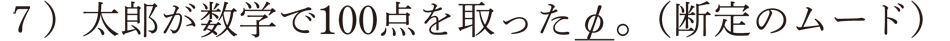「太郎が数学で100点を取った」というコトを、そのまま聞き手に提示すれば、話者がその内容を確定して聞き手に伝えるということになり、「断定のムード」となります。形式的には何もありませんが、ムードの重要な表現です。もし、文中で使われると（文の最後で言い切られない場合）、断定のムードではなくなるので注意してください。
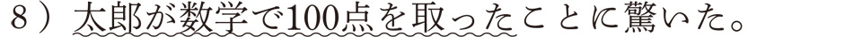この場合、「太郎が数学で100点を取った」は「～こと」につながり、「驚く」という述語の必須成分「太郎が数学で100点を取ったこと」を形成することになります。したがって文の最後に断定のムードとして発話されたものではないんですね。なお、このような「～こと」の構造については、第８章で詳しく説明します。
また、断定のムードでは、コトだけがそのまま提示されることは少なく、主語が主題化されるのが普通です。
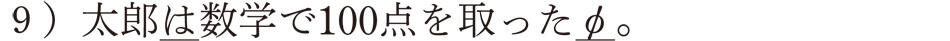この文のムードは主題の「～は」と断定の「～φ」ということになります。
ところで、述語が言い切りのかたちで終わる文は断定のムードと言いましたが、主語が一人称で意志的な動詞が来ると、意志のムードとなります。
これは、主語が一人称のときは主語の意志が動作に反映され、それを確定して伝えるということは、意志の表明になるからです。じゃあ、二人称（あなた）や三人称（彼や彼女など）はどうなんだろうと思うかもしれませんが、一人称以外はすべて断定のムードとなります。自分以外の人の意志は本人でなければ確認できないからです。したがって、二人称や三人称の意志のムードを話者が表すことはできません。
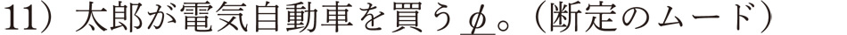「太郎が電気自動車を買う」というコトを確定して相手に伝えているという意味で、断定のムードになるわけです。意志のムードも、言い切りだけに使われ、文中では使われません。
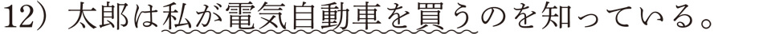「私が電気自動車を買う」というコトが「～の」に接続し、「知る」という動詞の必須成分（目的語）になっています。したがって、ここには意志のムードは存在していないことになるわけです。この「～の」についても第８章で説明します。
このように、基本的にコトの内容をそのまま聞き手に提示するのが断定のムードですが、主語が一人称で意志的な動詞が述語に来ると意志のムードとなるわけです。形の上では両者ともゼロ表示ですが、ムードの表現のなかでは、重要な位置を占めると言えます。
この断定のムードに関連して、よく話題になる「は／が」の使い分けについて、考えてみましょう。この問題は日本語教育の永遠のテーマみたいなもので、どのように学習者に教えたらいいのか侃々諤々の議論がつづいています。読者の皆さんには、まずはこの問題の本質とも言える両者の違いについてご紹介します。
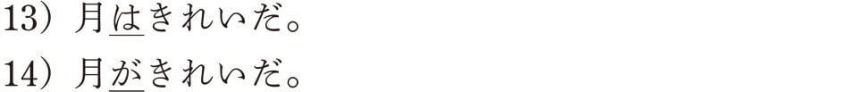両者の意味の違いは何だろうかということですが、もうすでに第１章と第２章で説明したように、「～は」は主題を表し、「～が」は主語を表しました。両者の文法的な役割は決定的に違ってましたね。文の主題を表す「～は」は、格関係で言えば、どの格成分（格助詞がついた成分）でもよく、その文にとって話題となるものが話者によって選ばれました。その意味でムードの表現でした。これに対して、「～が」は述語との関係（格関係）だけで結ばれ、コトを構成する成分の一つ（主語）でした。ということは、ただ単に「～が」と「～は」を比較するとしたら、これは土台無理な話になります。コトの成分（主語）である「～が」に対して、「～は」はムードに属し、格関係では決めることができないからです。
では、なぜこの問題が話題になるかというと、例文13）と14）に見られるような、同じコトからできた文でガ格が主題化されている文と主題化されていない文との違いが問題になるからです。両者の違いは、一見「は」と「が」だけで、その他の文の成分はまったく同じなんですね。それでいて、両者の意味が異なることから、この２つの文の使い分けが学習者を悩ませる頭痛の種になっているわけです。このような文法的な背景を理解したうえで、例文13）と14）を改めて見ることにしましょう。
この例文の意味の違いを考えるために、読者の皆さんには、この２つの文が使われる状況を思い浮かべていただきたいと思います。どのような状況なら、これらの文を使いますか。具体的な場面であればあるほどいいですが、それは、その状況の違いが、両者の意味に大きく関わっているからなんです。
いかがでしょうか。想像することができたでしょうか。では、うまくイメージできた人もできなかった人も、一緒に確認していきましょう。まず、例文13）の状況ですが、「月」の一般論を述べている場面がイメージできたでしょうか。「月」は、誰でも知っているごく身近な存在ですね。この文は主題文ですので、そんな「月」を話題にして、「きれいだ」と説明している文なんですね。状況としては、「月」を見ている現場にいる必要はありません。もちろん、その現場にいてもいいのですが、「月」の一般論を述べているのであれば、どこにいてもかまわないんです。天体の話をしているときに他の星とくらべながら、「月は本当にきれいだね」などと言うのも、そのような状況の一つでしょう。
これに対して、例文14）の状況はかなり違っていますね。おそらく月が見えるところで、その月を眺めながら発した言葉にちがいありません。夜、デートしている恋人同士なら、男性が女性に向かって、「ごらん、月がきれいだよ」なんて、ロマンチックな光景が目に浮かんできそうですね。文法的には、「月がきれいだ」というコトの成分をそのまま確定して聞き手に伝えているという意味で、断定のムード（φ）のみの、シンプルな文（「月がきれいだφ」）になります。このような文は、話し手が自分の見たままをそのまま聞き手に伝えることから、中立描写文と呼ばれます。コトをありのままに提示するので、主題化はおこなわれないんですね。文法書によっては、「中立叙述文」や「現象文」と言うこともありますよ。その他の例も挙げてみると、
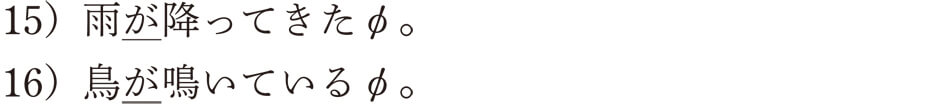など、自分の目や耳に入ってきた事実をコトの内容のまま聞き手に伝えていると言えます。主題化される「月」は一般論の「月」という意味で誰もが知っている情報（旧情報）であるのに対し、主題化されていない「月」は今見ているその瞬間の「月」であるということから、聞き手にとっては新しい情報（新情報）になるわけです。したがって、「は／が」の使い分けにおいては、この「旧情報」と「新情報」が重要なポイントとなるわけです。
この新旧の情報の違いを説明するときによく引き合いに出されるのが、昔話「桃太郎」の冒頭の部分です。読者の皆さんも（ ）のなかに、「は」と「が」のどちらが入るか、考えながら読んでみてください。
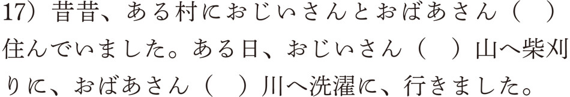日本人であれば、最初の括弧には「が」を、その後の２つには「は」を入れたはずです。なぜ入れたのでしょうか。それは、まさに新情報と旧情報の違いによって入れ分けたからなんですね。昔話の語りはじめの部分では、聞いている人にとって「おじいさんとおばあさん」は新しい情報になります。したがって、「が」を入れたわけです。しかし、いったん紹介されると、今度は古い情報になるわけですから、その後は「は」を入れたということになるんです。皆さんは、これを無意識にやっていたわけです。
これは、じつは英語の不定冠詞（a/an）と定冠詞（the）の使い方とまったく重なっているんですね。17）の例文を英語にするとこんな具合です。
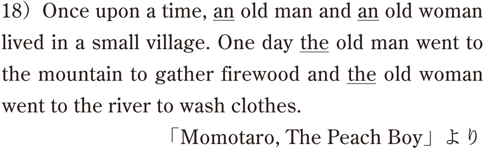いかがですか。英語でもはじめて何かを紹介する場合は不特定となるので、“a/an”で表し、一度紹介されると、特定化され、次には、“the”で示すということになるんですね。「は／が」の使い分けとまったく同じでしょう。そのうえ、この「は／が」と「a（an）/the」は、単語の前と後のどちらについているかというだけの違いなんですよ。
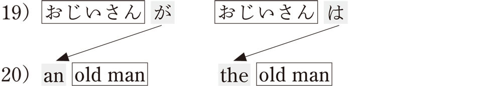日本人にとって難しいとされる英語の冠詞もこうやって考えると、何かわかりやすく感じるようになりませんか。じつは「は／が」の使い分けも同じで、英語の冠詞の使い方と同じであることを教えてあげると、英語圏の学習者はずいぶん気分が楽になるようです。もちろん、「は／が」と冠詞の使い方がすべて一致するわけではないんですが、少なくとも重なる部分があることに気づくことで、自国の言葉にはまったく存在しない文法現象ではないことを知るきっかけになるわけです。
人間の言葉は面白いもので、一見まったく異なっているようでも、単に表し方が違っているだけのこともたくさんあります。英語には敬語がないからと言って、尊敬する表現がないわけではなく、敬語という文法手段はなくても、“Would you”や“Could you”という仮定法で敬意を表すことができます。日本語に冠詞がないと言っても、同じような役割を助詞の「は／が」が担うこともあるんですね。したがって、「は／が」の使い分けで悩んでいる学習者も、ちょっと見方を変えれば、英語の冠詞の視点で「は／が」を考えることも可能になるんです。
「は／が」の違いについてまとめると、ポイントは主題を表すムードの「は」とコトのなかの格関係を示す「が」は、文法カテゴリーがまったく異なっているという点でしたね。ただ、同じコトでできた文でガ格が主題化された文とそうではない文に限定して考えると、「～は」の文は主題について述べる文であり、「～が」の文は中立描写文であると言えました。このような関係では、主題化された成分「～は」は旧情報であり、主題化されない成分「～が」は新情報でした。このことから、「～は」は特定された情報であり、「～が」は不特定の情報であると言えたわけです。
ここまでが、「は／が」の基本的な違いです。侃々諤々の議論がつづいていると言いましたが、「この違いがわかれば大丈夫だろう」なんて思わないでくださいね。本当の問題はこれからなんです。
「は／が」の違いを説明できるということとそれをどのように教えるかということはまったくの別問題なんです。今まで説明してきたことは文法における理屈になるんですが、これをどのように教えるかは教授法の分野になるんですね。この違いをそのまま教えたらよさそうなものですが、それでは、ダメなんです。
まず第一に、ここで皆さんに紹介したことを日本語のあまりできない学習者にどうやって説明するんでしょうか。かなり複雑で皆さんにとってもやさしくはなかったでしょう。仮に母国語でこの理論を教えることができたとしても、日本語の「は／が」を使いこなすことは、なかなかできないんです。考えてみてください。皆さんが「は／が」を使うときに理屈で考えていますか。先ほどの「桃太郎」の文に「は／が」を入れるとき、理屈なんて考えていなかったでしょう。そんな理屈なんか知らなくても、上手に「は／が」を使い分けていたじゃありませんか。日本人が英語の文法がわかってもうまくしゃべれないのと同じなんです。ですので、ここの議論の最初に、侃々諤々と言ったのは、どのように教えたら学習者がこの使い分けを身につけることができるのか、という教授法にかんする議論なんですね。本書の目的は文法の解説ですので、教授法の議論には立ち入りませんが、文法の理論とそれをどのように教えるかというのは次元の異なる研究分野になるんですね。
理由を述べたり、説明したりするときなどに使われるムードに「～のだ」があります。この「～のだ」という表現は漫画の「天才バカボン」のお父さんが連発していたものですね。「これでいいのだ」「今日は晴れなのだ」「お前はどこへ行くのだ？」など、覚えている人はかなり年配の人になりますが、若い人のなかにもテレビアニメの再放送やテレビのCMを見て、知っている人も少なくないのではありませんか。
じつは、このムード、バカボンのお父さんの専売特許ではなく、私たちも毎日使っている言葉なんですよ。「私はそんな変な言い方をしていない」なんて思うかもしれませんが、そんなことは決してないんです。今私が直前の文で使いましたがおわかりになりましたか？ 皆さん、気がついていないんですが、「～のだ／～のです」というのは、会話では「～んだ／～んです」になるんですね。バカボンのお父さんは、「～んだ」ではなく「～のだ」という言い方をしているのと、普通の日本人が使わない状況で「～のだ」を連発していることから、特異なイメージを作りだしていますが、この「～んだ／～んです」は私たちが日常的に使っている親しみのあるムードなんです。
たとえば、相手に説明を求めるときなどは、「どこへ行くんですか？」「どうしてそんなに急いでいるんですか？」など、「～んです」を入れるほうが自然になります。この「～んです」が入らないと、「どこへ行きますか？」「どうしてそんなに急いでいますか？」など、ちょっと詰問するような感じになりますね。この「～のだ」の使い方も日本人独特の言い回しであるため、外国人が使いこなすには難しい表現です。外国人の日本語が何か変だなと感じるのは、このムードの表現が使われていないことによることも多いんですね。韓国語には日本語の「～のだ」に相当する表現がありますので、韓国人は割と気軽に使うんですが、日本語とは使われる状況が少し異なるため、不自然な感じになることがあります。たとえば、以下の文は韓国の留学生の書いた作文からの抜粋ですが、なんか変でしょう。
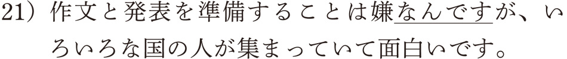日本人なら、ここでは「～んです」を使わないのが普通ですね。この「～んだ／んです」が使えるようになると、日本語力もかなり上達したと言えるでしょう。
コトの内容を自分の願望として伝えるのが、「～たい」です。「外国に行きたい」「一流企業に就職したい」「マイホームを建てたい」「車を買いたい」など、話者の願望を表しますが、留学生は自分以外の人にも使ったりして、変な日本語になることがあります。
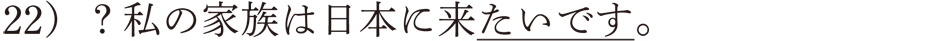「～たい」は話者の気持ちを表す表現ですので、話者以外の人には使えず、例文のような場合は、「日本に来たがっています」「日本に来たいようです」「日本に来たいみたいです」などと言わなければなりません。このような話者の気持ちを表す表現は「～たい」以外に、形容詞にも多く見られます。日本語では、感情や感覚を表す形容詞のことを感情形容詞と呼び、一人称の気持ちを表し、それ以外の人の気持ちは表すことができません。
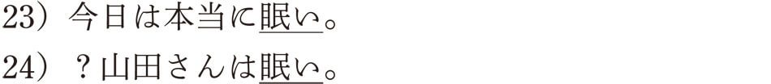24）の例も22）の例と同じように、「眠たがっています」「眠いようです」「眠いみたいです」のような表現にしなければならないんですね。英語ではこのような制約はなく、日本語ではおかしい22）と24）の例も、
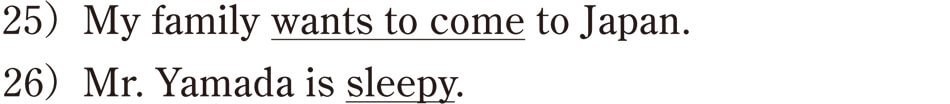などと言うことができるんですね。だから、留学生はよく間違えたりするんですが、面白いことに、日本語でも過去形にすれば言えますよ。
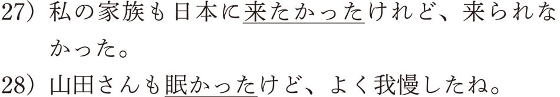これは、過去における気持ちであれば、現在までの間に本人の気持ちを確認することができるからなんですね。同じように、現在形でも、疑問形であれば、相手の気持ちを確定しているわけではないので、使うことができます。ただし、話をしている相手にだけですがね。
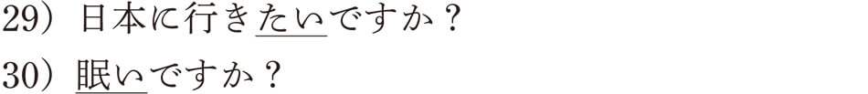29）の相手に尋ねる「～たいですか？」は親しい友人や目下の人には使えますが、目上の人には使えませんので、注意が必要です。
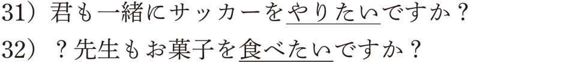サッカーを見学している少年に31）の文を使うことはできますが、先生に対して32）の文は少し失礼ですね。英語では目上の人であっても、“Do you want to have some cookies?”などと言えますので、留学生は普通に日本語の先生に聞いたりしますが、日本語教師は慣れたもので特に嫌悪感を持ったりしません。でも、一般の日本人だと、押しつけがましい感じがして、嫌な印象を持つでしょうね。
相手とのコミュニケーションにおいては、絶えず同意や確認をしながら、言葉のキャッチボールがおこなわれます。その意味で、会話でよく使われる「～ね」の役割は重要です。日本に来たばかりの外国人が最初に気づく音が、この「～ね」であると聞いたことがあります。おそらく、「～ね」を入れないでは会話が成り立たないぐらい、私たちは「～ね」を多用しています。たとえば、
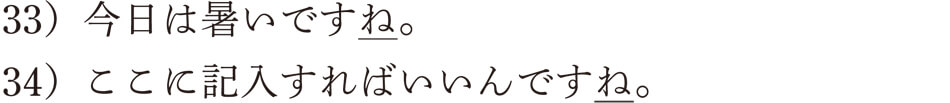において、最初の例は、同意を求める「～ね」ですね。「暑い」という感覚を相手と共有したいという気持ちの表れでしょう。34）の例は、自分より記入のしかたをよく知っている相手に書き方を確認している例ですね。ちなみに、同意を求める文では、「そうですね」などと、「～ね」を使って返事をすることができますが、確認の文では、「そうです」と「～ね」を使わないで返事をするのが普通です。
「～ね」は文章のどこにでも入れることができるため、日本語を覚えはじめた外国人が会話のなかでよく使うことがあります。日本語学習者にはとても便利なムードの表現になっています。国語の時間に文節（学校文法の単位で、文を構成する最小単位と言われます）という単位を習ったことを覚えている人なら、「～ね」を入れることができるのが、文節の単位であると教わったはずです。たとえば、
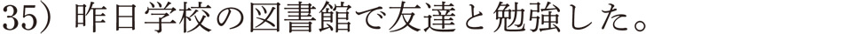という文であれば、
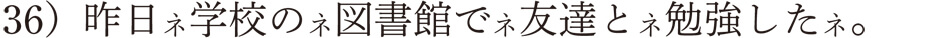と「～ね」を入れることができ、この「～ね」で区切られた部分が文節になるわけです。これぐらい、「～ね」はどこにでも入れることのできる表現なんです。
ところで、筆者がブラジルに滞在していたときに、ブラジル人が文の最後にこの「～ね」を頻繁に使っていることに気づき、不思議な気持ちになりました。ポルトガル語がだんだんわかるようになるにつれ、このブラジル式「～ね」は、じつは英語でいう付加疑問文であるということがわかってきました。付加疑問文というのは、相手に同意や確認を求めるときの表現で、英語では次のように使います。
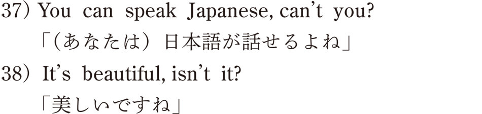という感じで、日本語の「～ね」の使い方とほとんど同じでしょう。
この最後の“can't you?”や“isn't it?”が付加疑問文の形式なんですが、英語の話者は日本人ほど頻繁には付加疑問文を使いません。でも、ブラジル人は本当によく使うんです。英語の“isn't it?”に当たるのが、ポルトガル語の“não e?”で、「ノン エ？」と発音します。日本語の「～ね」の発音とは似ていませんが、この「ノン エ？」を早く言うと、「～ネ？」になるんです。それで、このブラジル式「～ね」は英語のように主語や動詞によって形が変わることもなく、とにかくなんでもかんでも「～ね」を文の最後につけることができるんです。日本人にとっては、日本語の「～ね」と同じような感覚で使えるため、とても便利な表現で、私もよく使っていました。ただ、気をつけなければいけないことは、必ず文の最後につけるということで、日本語のように文のなかでは使えないんです。でも、日本語の「～ね」がポルトガル語にも使えるなんて、不思議な感じがしませんか。偶然といえば偶然なんですが、言葉というのは本当に面白いですね。
丁寧の表現もムードの一種と言われています。話者が相手によって、普通形にするか、丁寧形にするかの選択をします。たとえば、友達なら、「ご飯を食べる？」でいいですが、親しくない人には「ご飯を食べますか？」となり、さらに目上の人であれば、「ご飯を召し上がりますか？」などと言います。「召し上がる」は丁寧というより尊敬の表現になりますね。いずれにせよ、相手によって、話し方のスタイルを変えることで、相手への丁寧度を使い分けているのです。
ところで、丁寧語や尊敬語、謙譲語などをまとめて敬語と呼びますが、2007年にこの敬語表現について、大きな変化がありました。それは文化審議会国語分科会の答申により、新しい「敬語の指針」が発表されたからです。敬語はそれまで「尊敬語」「謙譲語」「丁寧語」という３つの区分で説明されてきましたが、指針では、この分類を細分化し、５つの分類を提示したんです。どのように分類したかと言うと、尊敬語はそのままで、謙譲語を謙譲語Ⅰと謙譲語Ⅱ（丁重語）に分け、丁寧語に美化語という分類を付け加えたんですね。せっかくですから、簡単にこの５つの分類を説明しましょう。
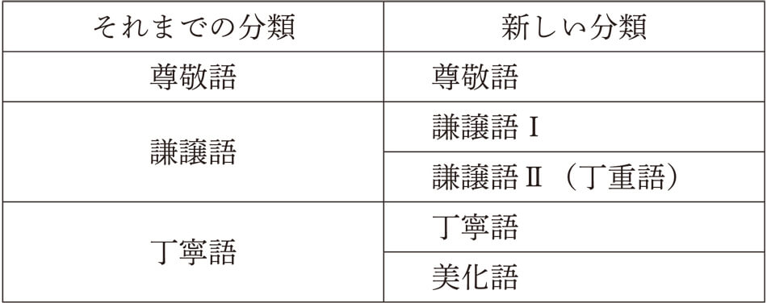まず、尊敬語です。目上の人などの行為を高める表現です。「お～になる」「～られる」が基本的な形式です。動詞の連用形が基になるのが「お～になる」で、「お読みになる」「お書きになる」「お話しになる」などと言い、「～られる」であれば、「読まれる」「書かれる」「話される」などとなります。生産性の高い表現であり、多くの動詞を尊敬語に変えることが可能になります。
次に謙譲語Ⅰですが、尊敬する相手を高めるのではなく、相手に対する自分の行為を低めることで、相手への敬意を表します。「お～する」と「～（さ）せていただく」という形式がよく使われます。前者は連用形を基にした形式で、「お書きする」「お読みする」「お話しする」などと使います。後者は、使役形に「もらう」の謙譲形である「いただく」をつけた形式で、「書かせていただく」「読ませていただく」「話させていただく」などと使います。この表現は若い人を中心によく使われていますね。これらの表現に加え、「お～いただく」という形式があり、「お書きいただく」「お読みいただく」「お話しいただく」など、相手の行為を自分が丁重にいただくというかたちで相手を高めます。一見尊敬語のようですが、謙譲語になります。「お～する」の「お～」は自分の行為を表すのに対し、「お～いただく」の「お～」は相手の行為を表すので、注意が必要です。
謙譲語Ⅱは、丁重語とも呼ばれ、尊敬すべき目上の人に対する敬意というより、その場にいる不特定多数の人などに対して自分がへりくだる表現です。特定の人に対する敬意ではないのが謙譲語Ⅰとの大きな違いです。「～いたす」や「愚～」「拙～」「弊～」などの名詞の前につく形式があります。「説明いたします」や「愚妻」「拙著」「弊社」などと使います。
丁寧語は、「です・ます」体と呼ばれる形式で、動詞は「～ます」、形容詞や名詞述語は「～です」となります。「行きます」「きれいです」「学生です」などの表現が丁寧語になります。
最後に、美化語ですが、「お酒」「お料理」「お菓子」「お米」など、ものごとを美化して述べるものであり、述語のかたちはなく、主に名詞に限られます。
これらのことをまとめると、以下の表のようになります。

これらの一般的形式に加え、日常的によく使われる語には、それらの語だけに限定される敬語形式があります。次に、そのような特定形式の表現をまとめましたが、面白い特徴がありますね。
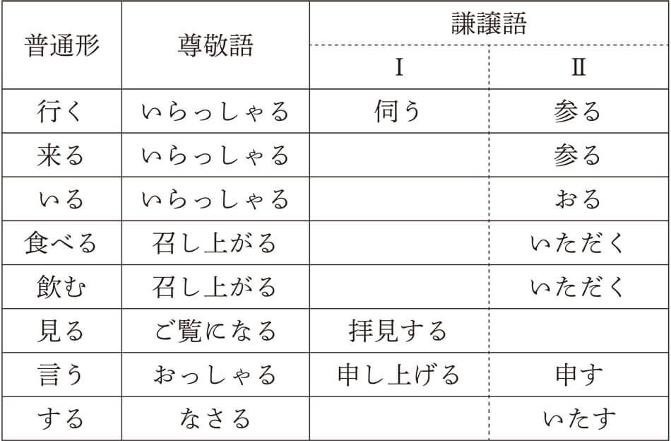上の表を見ればおわかりになるように、「いらっしゃる」は「行く」「来る」「いる」の尊敬語として使われています。「召し上がる」と「いただく」も「食べる」と「飲む」の共通の尊敬語と謙譲語になります。また、「行く」と「来る」では「参る」という共通の謙譲語を持っています。
このことから、尊敬語や謙譲語は動詞によっては３つ以上の形式で言えることになります。たとえば、「食べる」の尊敬語であれば、「お食べになる」「食べられる」「召し上がる」、謙譲語であれば、「いただく」「お食べする」「食べさせていただく」「お食べいたす」「お食べいただく」となり、どの表現を使ったらいいのか迷ってしまいます。このような複雑な要素のため、日本人でも敬語が苦手という人も多く、ましてや、日本語を勉強する外国人にとって、敬語を使うのは容易なことではないのがおわかりになるでしょう。
この章では、主に述語の最後に接続するムードの形式を見てきましたが、文末以外にもムードの表現があります。それは、副詞です。副詞は客観的なコトを構成する成分でもありますが、話し手の主観的な気持ちが入ったものも多くあります。たとえば、「せめて」「あいにく」「わざわざ」などの副詞には話者の特別な気持ちがこもっているのがわかりますね。また、副詞のなかには、文末のムードと呼応するかたちで使われるものが多くあります。「たぶん～だろう」「絶対に～φ（意志）」「おそらく～に違いない」「きっと～はずだ」「まるで～ようだ」「どうして～か」など、文末ムードと一体になって話者の気持ちを表し、文を成立させているんですね。
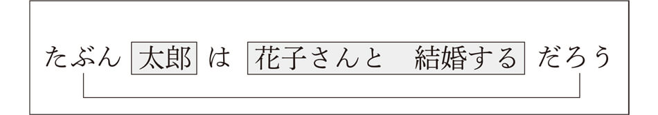ところで、ムードの表現は一つだけが使われることは少なく、その他のムードと一緒に使われることが多いと言えます。上の例でも、「たぶん」「～は」「～だろう」という３つのムードが使われていますね。文末のムードにかんして言えば、対事的ムードが先に来て、その後に対人的ムードがつづくという順番になります。
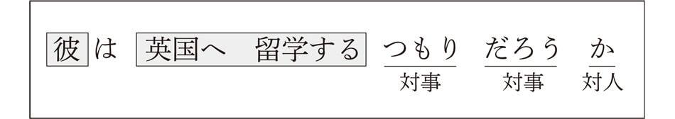この章で見てきましたように、さまざまなムードの表現が文の骨格であるコトを飾りつけることで、日本語文は成立するのですが、外国人にとってはやっかいな表現も多くあります。特にムードの副詞には、日本人独特の感覚が関わっているものがあり、それを理解して使いこなすには、時間がかかります。たとえば、「あいにく」の使い方などは、どのように説明したらいいでしょうか。広辞苑には「期待や目的にはずれて、都合のわるいさま」とあるので、そのように説明すると、外国人は「あいにく日本語の発表がうまくできなかった」のような文を作ってしまいます。「あいにく」が使えるようになるためには、「あいにく」が使われる状況のなかで、経験的に使い方を覚えていく必要があるんですね。
この章で日本語文の基本的な構造はすべて終わりました。いかがでしたでしょうか。日本語は骨組みとなるコトに話者の気持ちであるムードを付け加えることで、はじめて文が成立することがおわかりいただけたでしょうか。
▲